Hardware Database ボタンをクリックすると、ハードウェアデータベース ダイアログボックスが表示されます。
このダイアログボックスでは、データベース内の締結部品の追加、削除、または編集を行うことができます。
Hardware Database ボタンをクリックすると、ハードウェアデータベース ダイアログボックスが表示されます。
このダイアログボックスでは、データベース内の締結部品の追加、削除、または編集を行うことができます。ルールマネージャー ダイアログボックス内の
Hardware Database ボタンをクリックすると、ハードウェアデータベース ダイアログボックスが表示されます。
このダイアログボックスでは、データベース内の締結部品の追加、削除、または編集を行うことができます。
Note:
データベースを更新するには、書き込みアクセス権限が必要です。
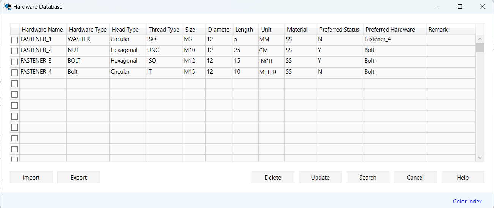
Note:
次のハードウェアタイプがサポートされています：
データベース内ですべての締結部品およびそのパラメータ（サイズ、単位、径、長さなど）を設定すると、設定されたハードウェアは自動的にアセンブリルールの設定で使用可能になります。
Note:
以下は、異なるハードウェア項目に対して設定可能な単位オプションです。これらの単位は、ルール検証時に使用されます。単位フィールドが空白の場合、検証時にはハードウェアドキュメント（パーツファイル）の単位が使用されます。
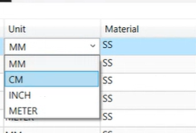
Search ボタンをクリックするか、Ctrl+F コマンドを使用して、ハードウェアデータベース ダイアログボックス内のハードウェアタイプをすばやく検索できます。 検索ダイアログボックスが表示されている間は、Update、Import、および Export ボタンは無効になります。
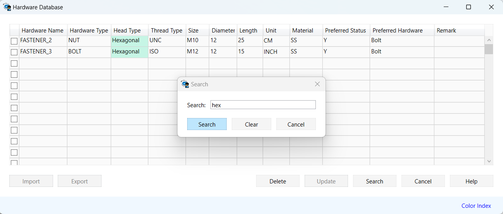
OK ボタンをクリックすると、以下の場所にあるデータベースファイルが更新されます。
Drive C:\ProgramData\GeometricLtd\DFMPro\DFMDataBase
新しい締結部品が追加されると、このデータベースファイルが更新されます。
ユーザーは、必要に応じてハードウェアデータベースの追加、編集、インポート、およびエクスポートを行うことができます。ユーザーは、ハードウェアデータベース ダイアログボックスから、Excel ファイルを使用してハードウェアデータベースを直接インポートできます。 また、データベースを Excel ファイルとしてエクスポートすることもできます。
ハードウェアデータベース ダイアログボックスで Export ボタンをクリックし、Excel ファイルを保存する場所を選択します。 このコマンドにより、ハードウェアデータが Excel ファイルとしてエクスポートされ、保存されます。
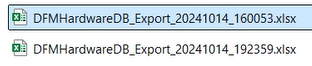
エクスポートを実行する前に、重複したエントリが存在する場合、DFMPro はメッセージを表示し、処理を続行するかどうかの確認を求めます。ユーザーは、データベースを保存するために必要な操作を行う必要があります。
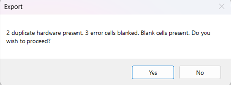
Import ボタンをハードウェアデータベース ダイアログボックスでクリックし、Excel ファイルを参照します。 その後、Open ボタンをクリックすると、Excel ファイル内のすべてのデータベースエントリがインポートされます。 インポートを実行する前に、DFMPro は Add または Overwrite のいずれかを選択するためのメッセージを表示します。
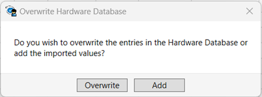
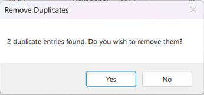
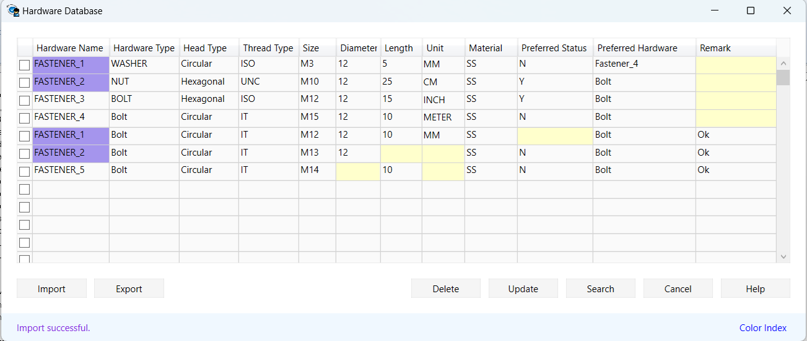
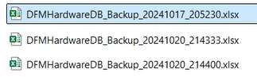
After editing the database entries as required, users can update them by clicking on the Update button. If users try to update the database without editing and removing the highlighted cells, DFMPro will display the following message.
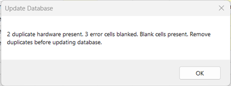
ユーザーは、Delete ボタン、またはキーボードの Shift キーおよび Ctrl キーを使用して、1つまたは複数のハードウェアタイプを同時に削除できます。
Delete Single Hardware Type:
Users can also select the Delete command from the keyboard to delete it.
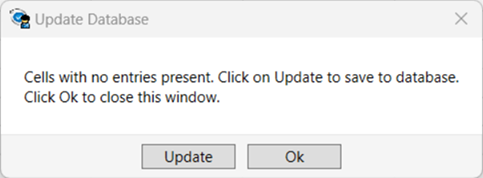
Delete Multiple Hardware Types:
For example, if required to delete only 1 to 5 out of 10 entries, click the Shift command and select the first and sixth hardware type. This action will select all remaining hardware type entries that are available between them.
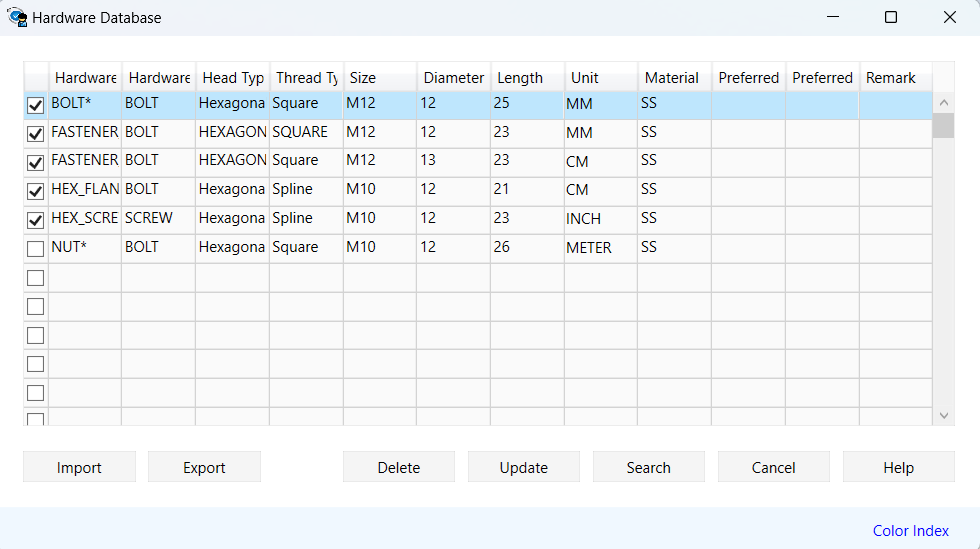
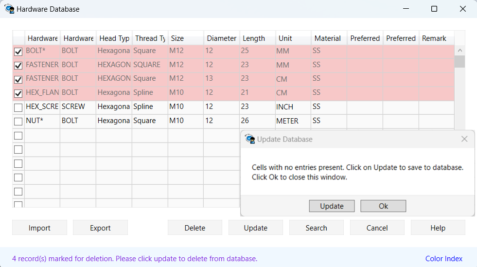
Users can also search for the required hardware type from the list. Click on the Search button or use the Ctrl+F command to quickly search for a Hardware type.
Wild Character support is available for fastener Configuration.
|
Input |
Interpretation |
|
ABC |
ABC.prt or abc.prt.1 or aBc.prt.4 – The latest version is used and gets checked. |
|
*ABC* |
Parts contain abc or ABC in their names. |
|
*_M32 |
All parts end with _M32. |
|
M32* |
All parts start with M32. |
Note:
Mentioned Inputs are not case sensitive. Users can configure *ABC* instead of the full fastener name.
With the above configuration, users can execute the following assembly rules: